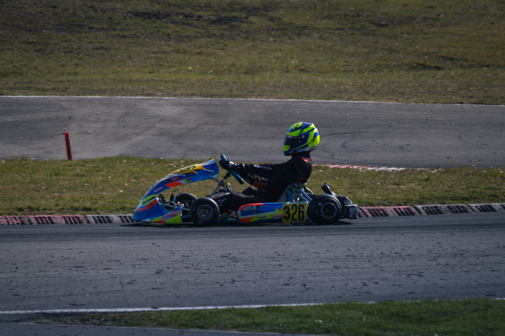
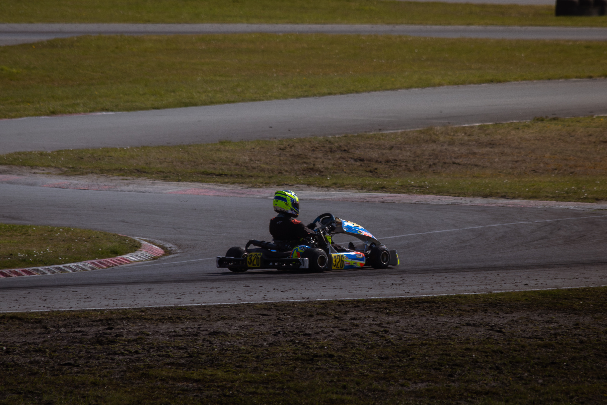
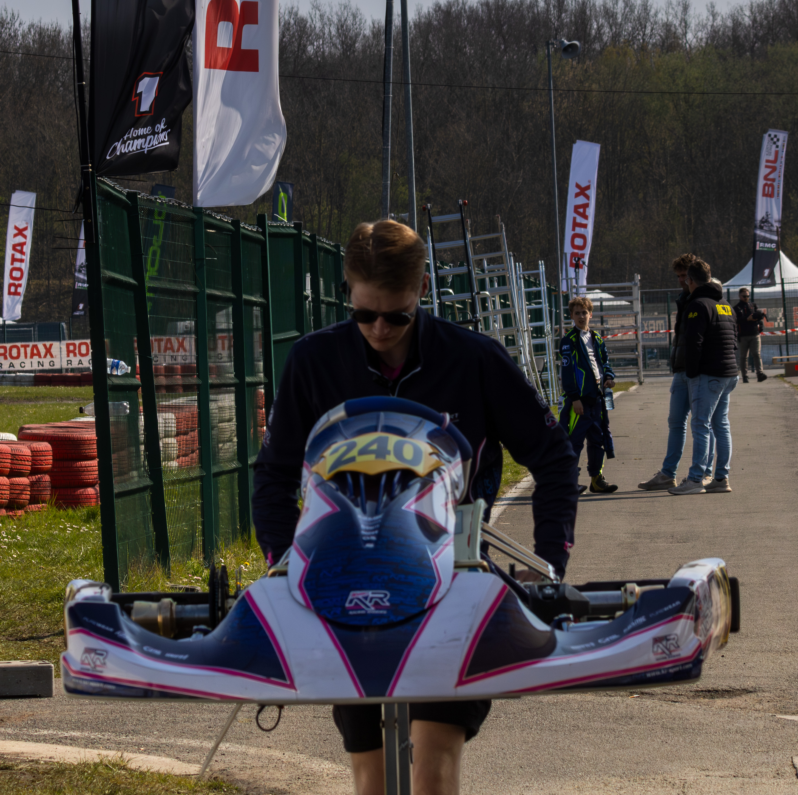
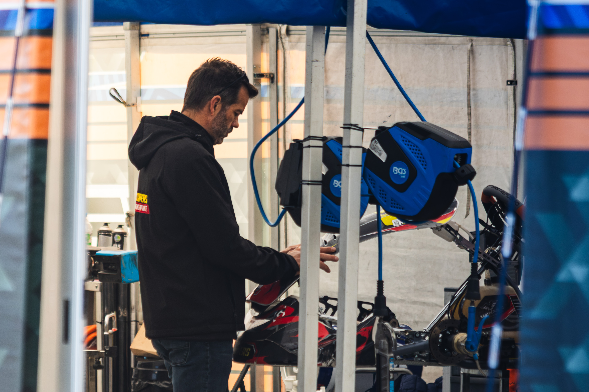
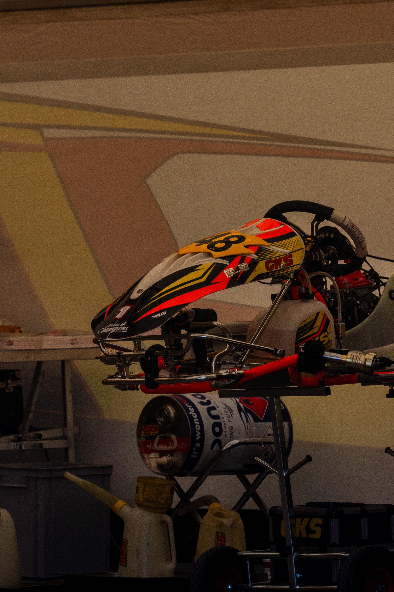
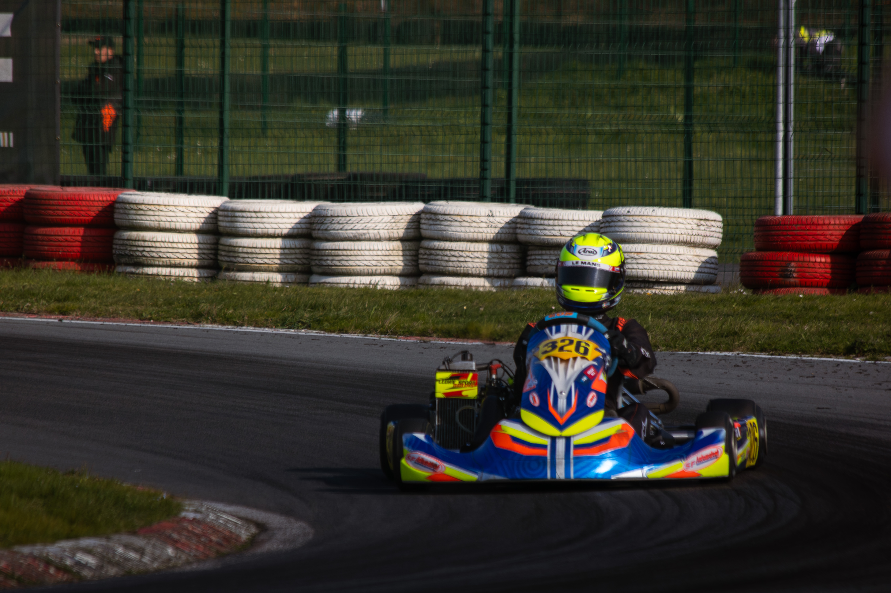
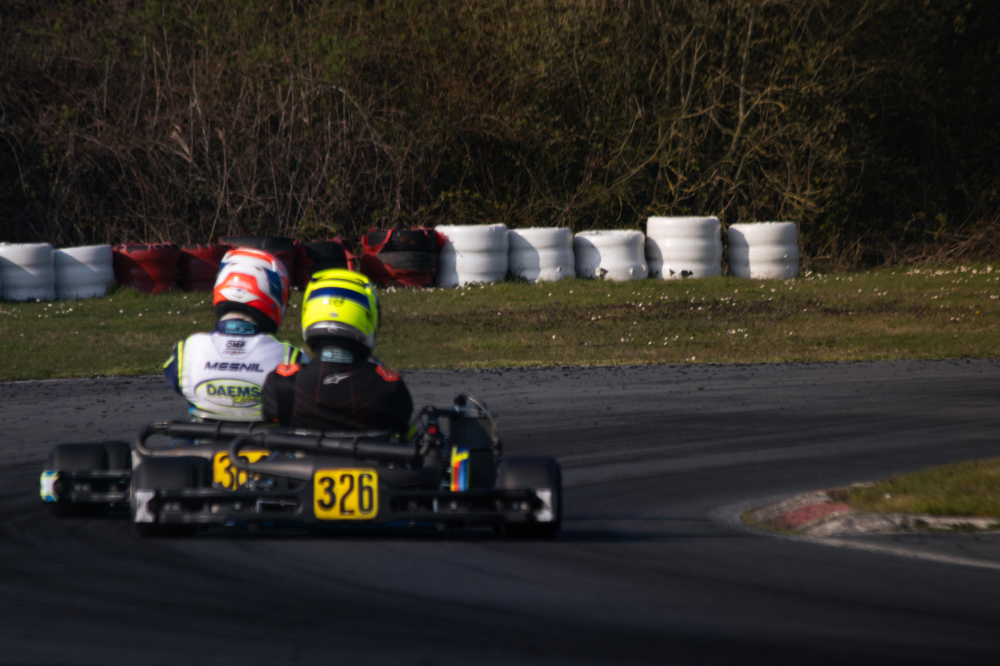

← RETURN TO QUEST LOG

Karting Photography







Concept
Une série capturant la vitesse, l'adrénaline et l'intensité des courses de karting. Focus sur les mouvements et les émotions des pilotes sur la piste, ainsi que sur l'atmosphère et la préparation dans les paddocks.
Technical Data
Utilisation de vitesses d'obturation rapides pour figer l'action avec précision, mettant en valeur l'intensité de la course et la concentration des pilotes.
Equipment / Skills Used
Gear: Canon EOS 2000D, 70-300mm f/4-6.3
Software: Adobe Lightroom
Data Resources
Access full image database on the Drive.
ACCESS DRIVE DATABASE